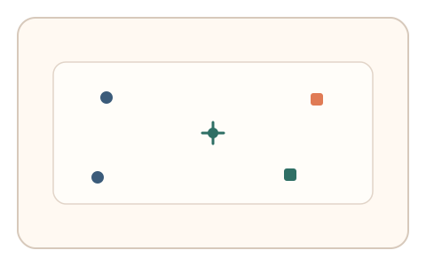
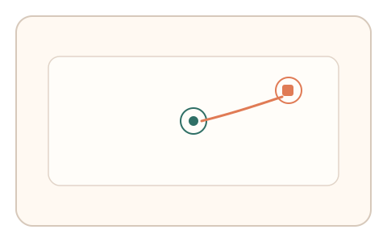
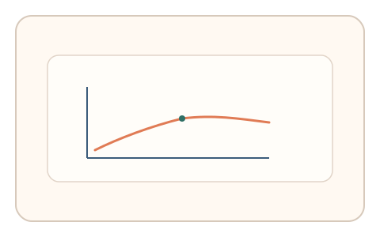

#44
视觉思考范式：时域/适应/残影
已扩展
外周拥挤签名
保持中心锚点不动，外围短暂出现目标，利用错误类型与反应时分布验证真实性。
概念原文
要求用户保持光标在中心锚点，外围短暂出现目标，用户快速点击或选择；记录错误类型与反应时间。
借用外周视觉拥挤效应与错误分布作为人类信号。
研究背景
外周视觉存在拥挤效应，短暂刺激下会出现稳定的错误类型与反应时分布。通过记录外围目标识别的误差结构，可得到具有鲁棒性的行为特征。
核心机制
- 要求用户保持光标在中心锚点。
- 外围短暂出现目标与干扰。
- 用户快速点击或选择目标。
- 记录错误类型与反应时分布。
用户流程
- 步骤 1：用户将光标保持在中心锚点。
- 步骤 2：外围目标短暂出现，用户快速点击。
- 步骤 3：系统统计误差分布并判定。
判定信号
错误类型分布
外周拥挤引发的混淆错误具有规律性。
反应时与偏心距离关系
目标越偏外围反应通常越慢。
判定逻辑
综合错误类型分布与反应时曲线，要求符合外周拥挤规律；误差过低或反应异常快判异常。
对抗面
- 脚本直接识别外围目标并点击
- 重放真实用户的点击序列
防御与缓解
- 随机化目标位置、出现时长与干扰密度
- 引入轻微噪声与掩蔽降低脚本识别
- 叠加轨迹与时序信号进行多信号判定
可达性与风险
提供更慢节奏或替代任务模式，避免对低视力用户造成不适。
- 过短呈现可能导致较高误拒
- 显示器尺寸影响偏心距离参数
可视化状态

状态 1：中心锚点
中心锚点与外围刺激区域。

状态 2：外围点击
目标短暂出现后快速点击。

状态 3：拥挤判定
分析错误类型与反应时。
参考资料
Crowding (visual perception)
说明外周视觉拥挤效应。
Peripheral vision
说明外周视觉的识别限制。